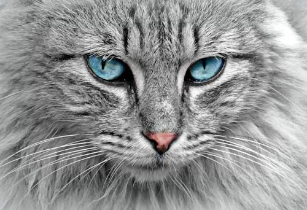
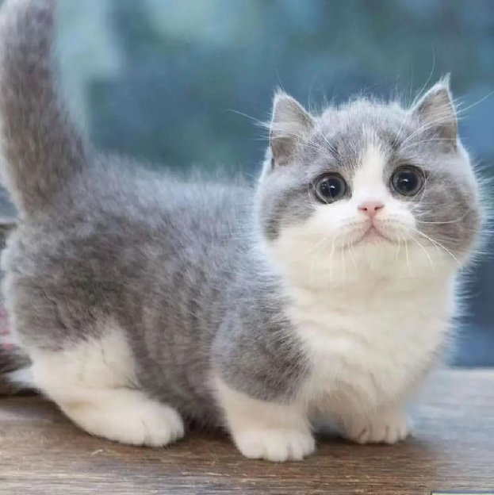

Kucing persia adalah ras kucing domestik berbulu panjang dengan karakter wajah bulat dan moncong pendek. Namanya mengacu pada Persia, nama lama Iran, di mana kucing serupa ditemukan. Sejak akhir abad 19, kucing jenis ini dikembangkan di Britania Raya dan Amerika Serikat usai Perang Dunia II.
Kucing Siberia

Kucing siberia adalah salah satu ras kucing domestik alami yang
berasal dari Siberia, Rusia. Kucing siberia memiliki nama lengkap
kucing hutan siberia. Beberapa organisasi pendaftaran kucing
menyebut kucing siberia titik warna dengan sebutan neva masquerade,
termasuk Fédération Internationale Féline.
Kucing Siam

Kucing siam adalah salah satu ras kucing pertama yang diakui jelas
sebagai kucing berjenis oriental. Sesuai dengan namanya, kucing siam
berasal dari negara Siam,
sehingga ras kucing ini sangat mudah
ditemukan di negara Thailand.
Kucing Munchkin
Kucing munchkin adalah salah satu ras kucing berkaki pendek yang terbentuk karena mutasi genetik alami. Ras ini baru mulai dikembangbiakkan sekitar tahun 1980-an di Amerika Serikat, negara asalnya. Karena kakinya yang pendek, munchkin menjadi salah satu ras kucing terkecil di dunia.